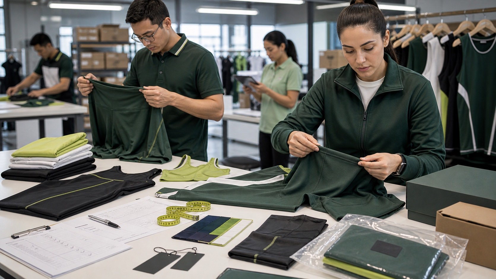

Color change
The original material may lose, shift, or unevenly change color after a defined exposure. Record the tested shade, lot, finish, care state, exposure, and evaluation basis.

Color-risk test planning
Match each failure question to the right exposure, specimen, adjacent material, evaluation, acceptance criteria, and released production scope—before one generic “colorfast” result hides a different risk.
Direct answer
Start with the failure you need to prevent: color change in the original material, staining of another material, dry or wet rubbing transfer, perspiration exposure, immersion in water, laundering, chlorinated-pool exposure, or transfer while contrasting panels remain in contact during storage. Then identify the production-intent specimen, select the current method and permitted options, define adjacent fabrics and evaluation conditions, write acceptance criteria before testing, and release only the color-material-lot-product scope supported by the evidence.
A wash result does not automatically answer rubbing, perspiration, water, pool, light, or storage-transfer questions. “Colorfast” without a named exposure, method, condition, rating, and scope is not a complete production approval.
Why the question matters
Recent Reddit discussions describe bright garments staining pale items in laundering, swimwear showing transfer before use, and uncertainty about whether new activewear colors will mark other garments. These posts establish current question language only; they do not identify a root cause, method, or acceptable result.
The original material may lose, shift, or unevenly change color after a defined exposure. Record the tested shade, lot, finish, care state, exposure, and evaluation basis.
Released color may stain adjacent fibers, contrast panels, labels, linings, packaging, towels, or other garments. The adjacent material and contact condition belong in the test record.
Dry and wet rubbing can transfer surface color even when a separate laundering result is acceptable. Test the relevant face, print, brushed area, seam, or high-contact zone.
Dark and light components held in contact may create a different risk from washing. Folding, moisture history, finishing, packaging, time, and contact pair must be controlled.
Seven-step workflow
The plan should let the team make a pass, hold, investigation, corrective-action, retest, exception, or rejection decision without inventing criteria after results arrive.
State whether the evidence selects a material, approves a colorway, validates contrast construction, supports a care instruction or product claim, releases a pre-production sample, or confirms a named bulk lot.
Record style, component, fiber content, construction, dye or print route where known, shade, color code, material supplier code, lot, finish, revision, sample stage, and previous care or conditioning.
List laundering, dry rubbing, wet rubbing, perspiration, water, chlorinated pool, light, storage contact, or another relevant condition separately. Do not let one convenient method stand in for every path.
Name the standard and edition, laboratory, specimen preparation, exposure variant, apparatus, solution or detergent, time, temperature, pressure, cycles, adjacent material, and conditioning required by the chosen procedure.
Define separate requirements for color change and staining where applicable, identify the rating scale or instrument basis, specify critical zones and contrast pairs, and name the decision owner.
Include relevant shades, lots, finishes, sizes, panels, linings, elastics, labels, prints, and contact materials. A loose fabric pass may not cover a finished garment or a dark-light assembled product.
Link any failure to the affected color, material, lot, component, process, style, or packing condition. Record containment, correction, retest identity, approved exception, evidence, approver, and exact scope released.
Exposure matrix
The same garment can need more than one route because each exposure supports a different decision.
| Question | What the record must identify | What it does not prove alone |
|---|---|---|
| Will color change or stain adjacent materials in laundering? | Specimen, care state, laundering method and option, detergent or solution, temperature, cycles, adjacent fibers, color-change rating, and staining rating. | Rubbing, perspiration, water, pool, light, storage transfer, garment fit, or every household care variation. |
| Will color rub onto another surface? | Test face or zone, dry or wet condition, rubbing method, white test cloth, pre- or post-care state, evaluation scale, and result. | Laundering durability, long-term wear, transfer under every pressure, or skin safety. |
| Will sweat or water create change or staining? | Selected perspiration or water method, solution, adjacent material, pressure, time, temperature, conditioning, color change, and staining. | Odor control, moisture management, pool resistance, light exposure, or all wearer conditions. |
| Will dark and light components transfer in storage? | Contact pair, finish and care state, moisture condition, folding or assembly, packaging context, method, duration, evaluation, and disposition. | Sublimation color accuracy, laundering, rubbing, pool use, or every shipping and storage climate. |
| Will swimwear color resist chlorinated-pool exposure? | Material and shade, pool-water method, chlorine solution and controlled conditions, specimen history, color-change evaluation, and scope. | Sea water, sunscreen, perspiration, sunlight, laundering, or finished-garment approval unless separately evaluated. |
Acceptance and release
A rating is useful only when it remains attached to the specimen, exposure, criteria, and production decision.
Record them separately when the method calls for both. A material may retain its own shade yet transfer color to an adjacent material, or change shade without severe staining.
Do not collapse dry and wet rubbing or different care states into one result. The report should preserve which condition produced each rating.
Prioritize high-contrast panels, pale linings, labels, elastics, prints, packaging contact, and other project-specific interfaces; document exactly which pair was evaluated.
State whether approval covers one swatch, garment, shade, material lot, finish, supplier, style, bulk lot, or reorder. A change needs an explicit bridging or retest decision.
Current primary references
AATCC publishes separate current methods for crocking, perspiration, accelerated laundering, water, chlorinated-pool water, and storage dye transfer. ISO 105-X12:2016 covers dry and wet rubbing, while ISO 105-E01:2013, confirmed current in 2023, covers resistance to water immersion. Select the edition, options, competent laboratory, evaluation procedure, criteria, and interpretation suitable for the product and destination. This article does not reproduce proprietary procedures.
If marketing makes an objective performance claim, the U.S. FTC advertising guidance says the advertiser needs a reasonable basis before the claim runs. The claim wording must not exceed the product, exposure, result, and scope actually supported.
Free test register
The CSV connects the color-material-lot identity to the method and edition, exposure options, adjacent materials, color-change and staining criteria, raw ratings, observations, affected scope, corrective action, retest, approval, and released production scope. Delete the illustrative row before live use.
Separation of intent
FAQ
No. A wash test answers only the selected laundering exposure and evaluation. It does not automatically prove resistance to dry or wet rubbing, perspiration, water, pool chemicals, light, storage contact, or every consumer-care condition. Match evidence and wording to the exposure actually tested.
Color change concerns the original specimen. Bleeding is informal language for released color in a liquid route. Staining concerns color deposited on an adjacent material. Crocking is transfer by controlled rubbing.
They answer different questions. Fabric testing screens a coded material, shade, finish, and lot. Finished-garment testing can include contrast panels, seams, linings, elastics, labels, prints, previous care, and storage contact.
No. Dye or print route, shade depth, fiber and construction, finish, material lot, supplier, care state, and assembled contrast pair can change the risk. Build a color-lot sampling plan from the product and agreed requirements, then document any decision to bridge results.
No. Colorfastness addresses the selected color-change or transfer question. Product safety, restricted substances, skin-contact requirements, labeling, and destination compliance need separate evidence and qualified review.
Preparing a production-intent color test?
Current method, laboratory, specimen plan, acceptance ratings, cost, timing, market requirements, and release authority must be confirmed for the exact project.